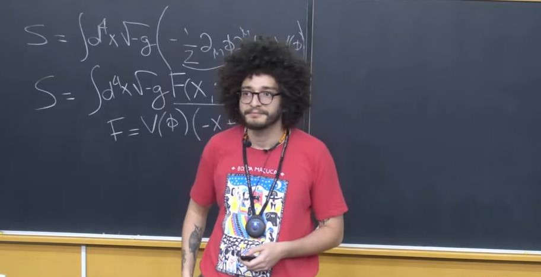

Presentation at Congresso Paulo Leal Ferreira 2025, at IFT-UNESP. Full presentation in YouTube.
I am João Rebouças, a postdoctoral researcher in observational cosmology at the University of Arizona Steward Observatory. I'm from Recife, Pernambuco, Brasil, where I graduated in Physics at Universidade Federal de Pernambuco in 2020.
I started my PhD in observational cosmology in 2020 - when the COVID-19 pandemic started - at Instituto de Física Teórica - UNESP (IFT-UNESP), with professor Rogério Rosenfeld as my advisor. I began working with professor Vivian Miranda, who was a postdoc at University of Arizona at the time and then became professor at Stony Brook University. During my PhD, I learned about observational cosmology and started developing projects that analyzed dark energy and modified gravity models with multiple datasets including distance measurements, Cosmic Microwave Background anisotropies, and 2-point correlation functions from galaxy surveys. I concluded my PhD in Februrary 2025.
I worked as a postdoctoral researcher at Centro Brasileiro de Pesquisas Físicas (CBPF), in Rio de Janeiro, where I spent one year from March 2025 to March 2026. I have collaborated with researchers from CBPF in several projects, including: using COLA simulations as fast nonlinear prescriptions to model LSST cosmic shear data; constraining dark energy sound speed and modified gravity using multiple cosmological probes; and using type Ia supernovae peculiar velocities to constrain the Universe's geometry and the growth of large-scale structure.
I am currently working as a postdoctoral research fellow at the University of Arizona Steward Observatory, in the Arizona Cosmology Lab. I conduct several projects within the Dark Energy Survey (DES) and the Legacy Survey of Space and Time (LSST) collaborations regarding extended cosmological models.
Feel free to explore my research, publications, and contact me for any inquiries!